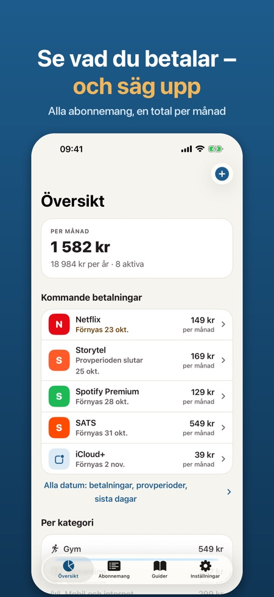
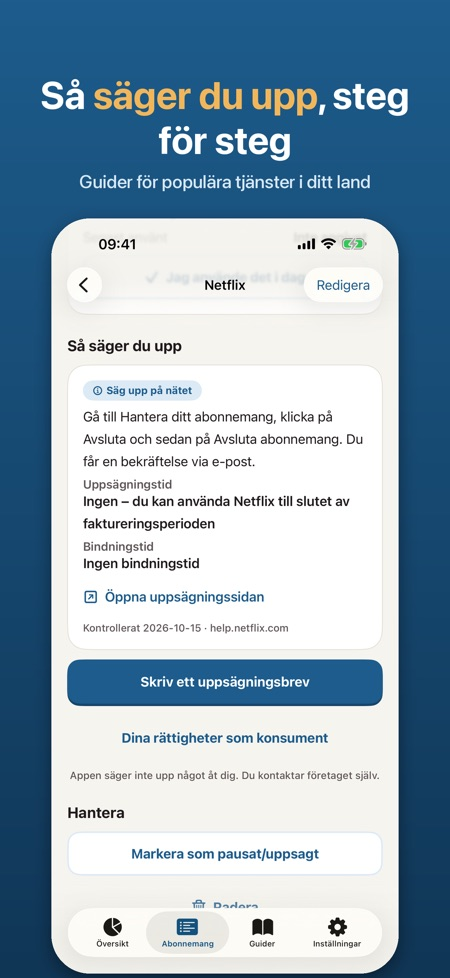
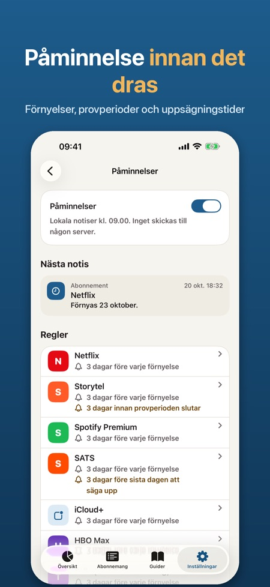

Påminnelse före förnyelse. Se vad du betalar varje månad, få en påminnelse före varje förnyelse och säg upp med ett färdigt brev. Ingen bankinloggning – allt stannar på din iPhone.



Se alla abonnemang du betalar för, få en påminnelse innan de förnyas och se hur du säger upp dem.
GJORD FÖR SVERIGE OCH RESTEN AV NORDEN
Välj bland populära tjänster i Sverige, Norge, Danmark och Finland: streaming, musik, mobil, gym, ljudböcker och mer. Betalningsperiod och hur du säger upp fylls i åt dig – eller lägg till egna.
SE VAD DU BETALAR
• Total per månad och per år
• Kostnad per kategori och ditt dyraste abonnemang
• Ange när du senast använde något och hitta det du betalar för utan att använda det
DET SOM KOMMER
• Kommande betalningar och datum att agera på, 30 eller 90 dagar framåt
• Statistik per månad eller per år, per kategori
• Alla uppsägningsguider i en egen flik och påminnelserna samlade på ett ställe
PÅMINNELSER I TID
• Före varje förnyelse, upp till 30 dagar i förväg
• Innan en provperiod blir ett betalt abonnemang
• Före sista dagen att säga upp och när bindningstiden är slut
SÄG UPP UTAN KRÅNGEL
• Uppsägningsguider per tjänst och land med direktlänk, uppsägningstid, bindningstid och datum när vi senast kontrollerade dem
• Ett tydligt uppsägningsbrev på svenska, norska, danska eller finska med namn, kundnummer och begäran om skriftlig bekräftelse. Dela via Mail eller Meddelanden, kopiera eller spara som PDF – du skickar det själv
• Korta texter om dina rättigheter som konsument
WIDGET PÅ HEMSKÄRMEN OCH LÅSSKÄRMEN
Månadskostnaden och nästa betalning direkt.
PRIVAT
Inget konto, ingen bankinloggning, ingen reklam. Allt stannar på din iPhone. Lås med Face ID och export som CSV om du vill.
PRO
Utan Pro kan du följa upp till 5 abonnemang med påminnelser och uppsägningsguider. Pro ger obegränsat antal abonnemang, uppsägningsbrev, kostnad per kategori, widget och CSV-export. Välj årsabonnemang eller ett engångsköp. Årsabonnemanget börjar med en provperiod på 7 dagar.
Appen är oberoende och inte knuten till någon av tjänsterna i listan. Tjänstenamnen tillhör sina ägare. Uppsägningsguiderna och texterna om rättigheter är information, inte juridisk rådgivning. Appen säger aldrig upp något åt dig.